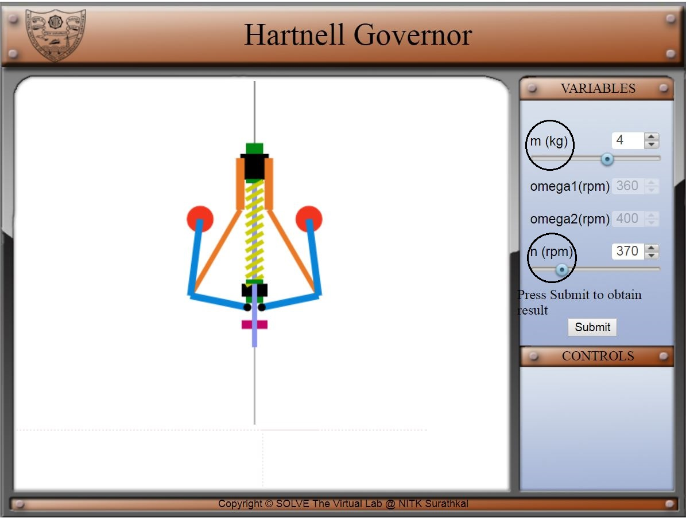
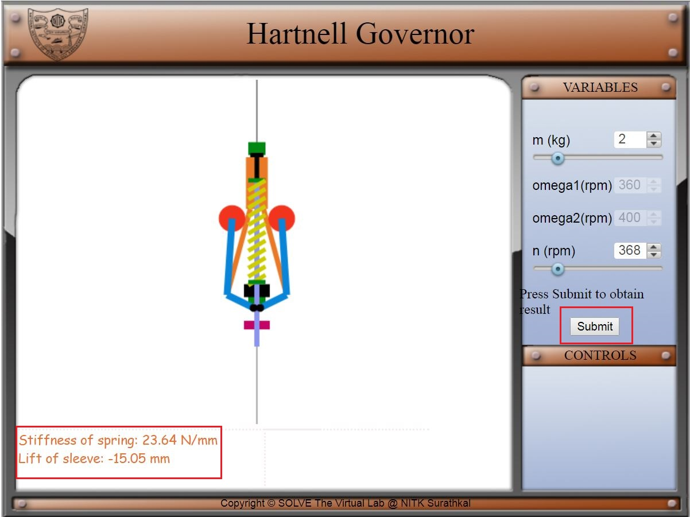

Objective:
After completing this simulation experiment of Proell governor one should be able to:
1. To find the stiffness of the spring .
2. To find the lift of the spring
Introduction:
Governors, in general, are most useful means of controlling or regulating the speed of an engine based on varying levels of the load at the output. Think of the governors from its usefulness point considering the fuel injected. They are used in regulating the speed of the engine, which takes to the fact that the fuel injected is based on the instantaneous speed variations seen along the shafts.
Instantaneous fluctuation of speed in a system is of two types
a) Intra cycle fluctuation
- This is due to internal cause (Example includes within engines, say moment)
- To reduce this, Flywheels are used
b) Inter cycle fluctuation
- This is due to external cause (Example includes load on engines)
- To reduce this, Governors are used
Ref: https://www.youtube.com/watch?v=sI8sF3Ls8As
Theory and Working:
Governors are of two types
1) Fully Governed (Generator)
2) Partially Governed (Automobile engine)
Governor is a mechanical device which is used to regulate the mean speed of the engine when there are variations in the load. When the load on the engine varies, the configuration of the governor changes and it controls the supply of the fuel to the engine.
The governors may, broadly, be classified as
1. Centrifugal governors
2. Inertial governors
1. Centrifugal governors
The centrifugal governor is based on the balancing of centrifugal force on the rotating balls by an equal and opposite radial forces, known as the controlling force. Centrifugal governors are further classified as
| Pendulum Type | Watt Governor |
| Loaded Type | Dead Weight Governors | Porter Governor |
| Proell Governor | |
| Spring Controlled Governors | Hartnell Governor |
| Hartung Governor | |
| Wilson-Hartnell Governor | |
| Pickering Governor |
2. Inertial governor:
In inertial governors, the balls are arranged in a manner that the inertia forces caused by angular acceleration or retardation of the governor shaft tend to change their position. The obvious advantage of inertia governor lies in its rapid response to the effect of a change of load. Inertia governor is more sensitive than the centrifugal, but it becomes difficult to completely balance the revolving parts. For this reason, centrifugal governors are more frequently used.
Interesting Fact about Governors
1) The idea for governors as a whole was given by Matthew Bolten (assistant to Sir James Watt) followed by Sir James Watt (Watt Governor) but failed due to the small fluctuation of dead weight with the high fluctuation of speed
2) Allen Potter gave Potter Governor which was first installed in the system
3) Mechanical governors use
- Mostly for speed control
- Overspeed control
- Fuel supply (of an I.C. engine)
- Water supply to a turbine
- Steam supply to a steam turbine
HARTNELL GOVERNOR
Introduction
A Hartnell governor is a spring-loaded governor in which spring is always in compression as shown in the figure below. It consists of two bell crank levers pivoted at the points O to the frame. The frame is attached to the governor spindle and therefore rotates with it. Each lever carries a ball at the end of the vertical arm and a roller at the end of the vertical arm. A helical compressive spring provides equal downward forces on the two rollers through a collar on the sleeve. It serves the purpose of dead weight load.
Fig: Parts of Hartnell Governor
Ref: https://www.mecholic.com/2017/05/hartnell-governor-construction-working.html
Mathematical equation:
m = Mass of each ball (kg)
M = Mass of sleeve (kg)
r1 = Minimum radius of rotation (m)
r2 = Maximum radius of rotation (m)
ω1 = Angular speed of the governor at minimum radius (rad/s)
ω2 = Angular speed of the governor at maximum radius (rad/s)
S1 = Spring force exerted on the sleeve at ω1 (N)
S2 = Spring force exerted on the sleeve at ω2 (N)
Fc1 = Centrifugal force at ω1 = mω12r1 (N)
Fc2 = Centrifugal force at ω2 = mω22r2 (N)
s = Stiffness of the spring or the force required to compress the spring by a unit distance
x = Length of the vertical or ball arm of the lever (m)
y = Length of the horizontal or sleeve arm of the lever (m)
r = Distance of fulcrum O from the governor axis or the radius of rotation when the governor is in mid-position (m)
Figure: Hartnell Governor

Figure: Hartnell Governor Min and Max position
Consider the forces acting at one bell crank lever. The minimum and maximum position are shown above.
Let h be the compression of the spring when the radius of rotation changes from r1 to r2. For the minimum position i.e. when the radius of rotation changes from r to r1, as shown in the figure above, the compression of the spring or the lift of sleeve h1 is given by:
Similarly, for the maximum position i.e. when the radius of rotation changes from r to r2 as shown in the figure above the compression of the spring or lift of sleeve h2 is given by
Adding equation (1) and (2),
The stiffness of the spring is obtained as:

The distance of the ball from the centre:


The simulation of the Hartnell governor is developed using JavaScript and HTML.
- The simulation initially begins with a default set of parameters for minimum rpm (omega1), maximum rpm (omega2), mass (m), and rotating rpm (n).
- As you vary rotating rpm (n) the sleeve moves up and down it also consists of submit bottom which will display the stiffness and lift of the sleeve.
 


- Derive all relations used in Hartnell governor
- Write the real-life application of Hartnell governor